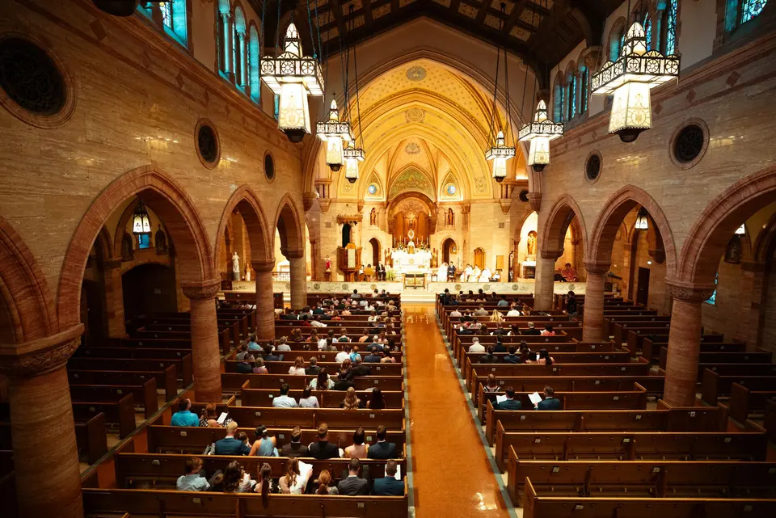

I
Enquire
Tell me your date and a few details. You’ll see which collection fits straight away, and I’ll reply to you personally.


Catholic & Christian weddings · Colorado
Honest wedding photographs, made with reverence.
As featured in
Why I do this
I photograph the nervous laughter before the aisle  the tear-filled vows, the quiet of the Mass
the tear-filled vows, the quiet of the Mass  and the joy no one rehearsed
and the joy no one rehearsed  so you can live it fully, and keep it for generations.
so you can live it fully, and keep it for generations.
“Christ enters all aspects of my work.”
Jason Smith
20yrs
behind the lens, telling stories of faith and family
6
children at home, so chaos doesn’t rattle me
1wk
to your wedding preview and your senior gallery
10yrs
your Signature gallery stays online to share
What I photograph
In the sanctuary
I regularly photograph Catholic and Christian weddings, and I’m at home working within church guidelines. I capture the moments that matter while keeping the focus on prayer and the sacrament.
Recent favorites


Hi, I’m Jason
I’m a happily married father of six, and I wear a lot of hats: designer, photographer, videographer. Before all this I worked in clinical pharmacy and research, and I still love carpentry. That mix shapes how I see a wedding day.
Authenticity is the heart of every image I make. I’ll give you gentle direction when you need it, then step back so you can be present with the people you love.
How it works
Most couples book 9 to 18 months ahead, especially for spring and fall. Shorter timeline? Ask anyway.
I
Tell me your date and a few details. You’ll see which collection fits straight away, and I’ll reply to you personally.
II
We meet by phone or over coffee. I answer every question, and every price is negotiable.

III
A relaxed session to get comfortable in front of the camera, with photos made for save-the-dates.

IV
I coordinate with your parish beforehand, then document the day quietly as it unfolds.
V
A preview within a week, the full gallery in about 6 to 8 weeks, and a KISSBOOK or ZNO album if you’d like one.

Kind words
Jason made our engagement photoshoot an absolute delight. He captured our love perfectly and made us feel comfortable throughout.
Not only was it an absolute breeze to work together, but his creativity truly blew me away.
Your story begins here
Tell me your date and a few details. You’ll see which collection fits straight away, and I’ll reply to you personally.
Or write to jason@thethingsthatisee.com · 714-290-4333